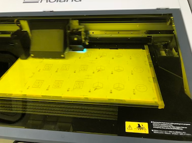

＜商品概要＞
※作るものが途中で少し変わりました。完成品の概要は下記の「商品紹介ページ」をご覧ください
カバンに入れると粉々になってしまうスナック菓子を
袋ごと守ってくれるケースです。
＜作業進捗＞
ペーパーモックアップ（試作品①）
＜Q&A＞
Q:中の構造はどうするんですか？
A:ポテトチップスを袋のまま入れられるように、強度がありながらも柔軟な構造にしたいと思っています。
Q:デザインはこのままですか？
A:お菓子をオシャレに持ち歩けるようなデザインにしようと思っています。
＜追記＞


コールドモックアップを作るために、ペーパーモックアップで考えられてなかった
ケース内に入れる予定の中敷きを試作した。
コールドモックアップ（試作品②）

中敷きをプロトタイプしたときは素材が紙だったので気づかなかったのですが、柔軟性のあるプラスチック板で
試作時のままのサイズで中敷を作ったところ、袋に入れてみると口部分が閉じられませんでした。
4センチほど板をカットして、閉じるためにサイドに少し谷折りのクセをつけたことで、口が閉じられるようにしました。
＜この試作の成功・失敗体験＞
成功→少しの衝撃・圧迫からポテトチップスを守るための機能を持ったケースを試作できたこと
失敗→中敷きを組み立て式にしたので、少し組み立てるのが面倒になってしまったこと
＜レビューを受けて＞（week1）
自分がどこに焦点を当てたものを作りたいのか、面白いと感じたポイントはどこなのかについて
改めて色々考え直しました。考えた結果、私はポテトチップス全体を守るケースを作るのではなく、
一枚のポテトチップスのみ守る方が面白いのでは？と考え、その方向で作ることに決めました。
＜考察＞
今回の施策の目的は、ポテトチップスなどの形が崩れやすいお菓子を安心して持ち運べるような、
ケースの機能を試作することでした。結果は、機能を試作できたという点で成功したと思います。
＜アイデアメモ＞
試作品③

＜制作過程＞
①アタッシュケース風の名刺ケースからジャバラ部分を取り外す

②ジャバラを外したケースの内側に抗菌シートを貼る
③完成
＜この試作の成功・失敗体験＞
成功→一枚のポテトチップスを守るケースとしてイメージ通りのデザインの物が見つけられて、加工できたこと
失敗→反り返った形のポテトチップスなど、ケースに形が合わないものは閉じると割れてしまった
＜考察＞
ポテトチップス一枚をしっかり守るために、このケースを使って試作しましたが、ポテトチップスの一枚一枚の
個体差を考えきれていませんでした。また、そのまま入れるので衛生面を考えて抗菌シートを貼ったのですが、
不恰好になってしまったのでその問題も解決する必要があることがこの試作でわかりました。
試作品④
＜制作過程＞
①クリアケースの上蓋と下蓋の両方の内側に抗菌シートを貼る
②実際にポテトチップスを入れた後蓋を閉じて、サイズ感を確認

③少しシンプルすぎるので「POTATO」の文字を貼って、完成
＜この試作の成功・失敗体験＞
成功→一般的なサイズのポテトチップスなら入るケースを作ることができたこと
失敗→石鹸用のケースを代用して作ったので、何かで蓋を固定しないと蓋が開いてしまうため持ち歩きに適さない
＜中間レビューを受けて＞（week1.5）
一枚のポテトチップスをケースで守るという発想から、面白い方向へより振り切るために「一枚を守ることだけでなく
高級感を感じられるケースにしてみたら？」というアドバイスを受けました。次の試作では、
「一枚のポテトチップス」を守る機能をもちながら、「一枚をより魅せられるケース」を試作しようと思いました。
＜考察＞
試作品③で発生したサイズ感の問題を解決するために、ちょうどいい大きさの石鹸ケースを使った試作を行いました。
ここでの試作では、一般的な大きさのポテトチップスなら大体は入るケースを作ることができました。
ただ、一枚を守るという点から見ると、いまいち頼りない見た目になってしまったので次回の試作では機能とデザインを
両立したものにしたいと考えました。また、この試作を作る中で、一枚の形をじっくり観れるようなケースの方が
より面白いかもしれないと思いました。
試作品⑤

＜制作過程＞
［ポテチの見本］
①ポテトチップスのサイズを測る
②Illustratorでポテトチップスのギザギザ部分を再現した線を作り、DXF形式で書き出す
③②で作ったデータを３DCAD(Fusion360)で取り込み３Dモデルを作る
波線をオフセット→二つの線を繋いだ後押し出して、トタンっぽい板を作る→
ポテチと同じサイズの楕円をスケッチで描く→トタンの側面を突き抜けるまで押し出す→
「交差」を選択し、ポテチの形をくり抜く
④freeformで凹凸と反りをつけて、本物感を出す
⑤Preformで３Dプリントする
⑥完成
［箱］
①箱の模様を紙やすりで消す＆表面をなめらかにする
②箱にマグネットシートを貼る
③容器にマグネットシートを貼る（容器固定のため）
④ポテチと容器を箱に入れて大きさを確認してみる
⑤BOXに転写シールで文字を入れる
［トング］
dungbeetle24さんの３Dデータを使用して作りました
トングのデータ
ムービープロトタイプ（試作品⑤用）
＜この試作の成功・失敗体験＞
成功→木箱と和紙とのし紙を使って、少し高級感のあるケースを制作できたこと
失敗→高級感を感じさせるには、イマイチ何かが足りない中途半端なデザインになってしまったこと
＜中間レビューを受けて＞（week2）
自分があまり気にせずに使っていた物の意味について尋ねられた時、答えられませんでした。
また、漠然と「高級感」があるものを作ろうとするのではなく、和風にするのか、洋風にするのか
方向性をしっかり定めた上で作る方が、デザイン案が固まりやすいなと感じました。
アドバイスを参考に、和の高級感が感じられるようなケースを作ろうと思いました。
＜考察＞
高級感を感じてもらえるデザインにしようとしたのですが、和と洋の色々な要素を詰め込みすぎて
少し違和感を感じるケースになってしまいました。また、あまりよく考えずに、のし紙や紐などの
パーツを使ってしまっていたので、使う物の意味や歴史などをよく調べて案を練り直す必要があると思いました。
完成品
［作品名］
ポテチのケース
価格：3500円
結び方のムービープロトタイプ
＜制作過程＞
［箱の中身］
①スポンジをカットする

②ラップに包んだ後、箱に入れてサイズ確認をする
③サテンでスポンジを包み箱に入れる（紫・白の２色で比較をして、より高級感のある紫にしました）
［ぽてちのさほうのデータ制作］
①さほうのアイデアを描く
②Illustratorでデータを作る
［データの印刷］
①UVプリンターでデータを印刷する

②紙をカットする
③完成
＜この試作の成功・失敗体験＞
成功→ケース選びとデータの作成・印刷が上手くいきました
失敗→展示の際に本物のポテトチップスを置かずにディスプレイしたこと
＜レビューを受けて＞（week３）
実際に展示をしてみて、自分が望んだ使い方で商品を使ってもらうには、見ただけで商品の使い方を
わかってもらえるような工夫が必要であることがわかりました。
また、何も知らない人が商品を使うときには、どんな行動に出るのかについて予測する力も
必要だと思いました。
＜考察＞
複数の試作品を作ってきて、そこで感じたことや思いつきのいいとこ取りをしつつ制作をすすめられました。
一枚のポテトチップスを少しおかしな高級感の中で観賞し、大切に食べてもらえそうなケースができました。
＜まとめ＞
最終的にできた商品は、自分で１から作ったものではありませんでしたが。既製品とアイデアを組み合わせつつ、
自分が作っていて楽しいもの、人にあげたら面白そうなものを作ることができたのでよかったなと感じました。
また何かを制作するときは、既製品を使うのではなく、自分の手で全て作り上げることに挑戦しようと
思います。その際、試作品の段階では、今回のように既製品の力を借りながら、小さな試行錯誤を繰り返して
制作しようと思いました。